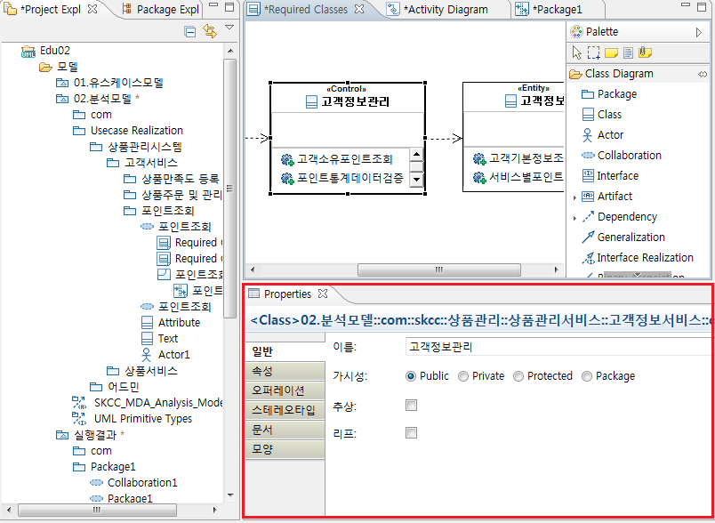
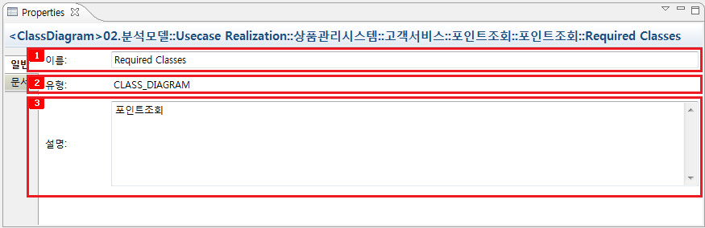
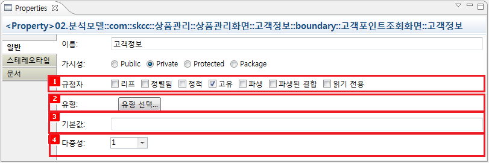
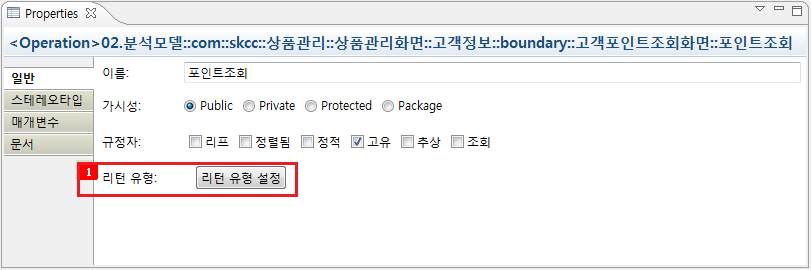
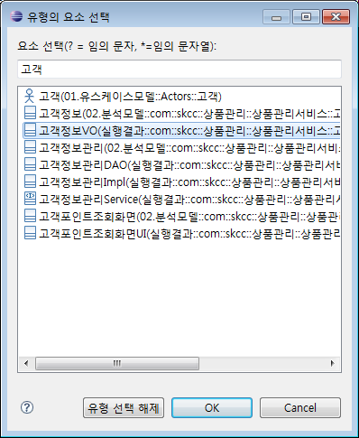
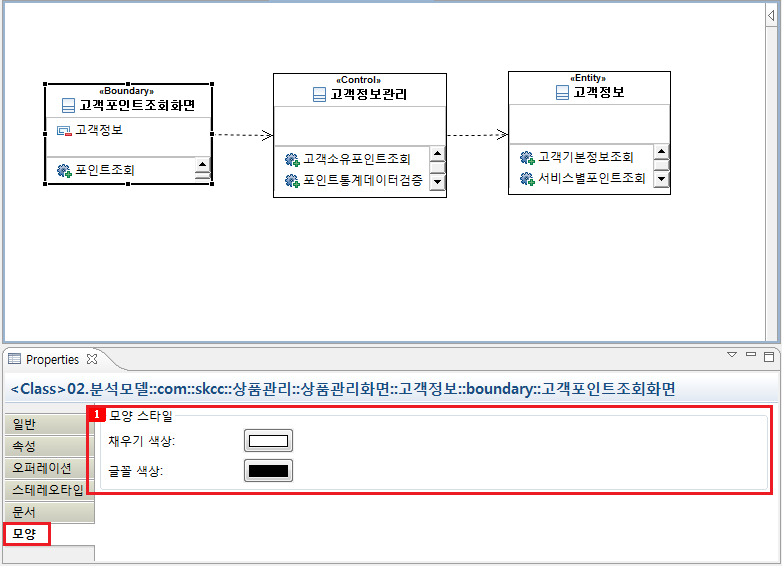

1. 특성(Properties) 일반
UML 요소 특성(Properties)은 프로젝트 탐색기에 트리 구조로 표현된 정보, 다이어그램 내의
그래픽 적인 정보만을 가지고는 알 수 없는 세부 사항들을 설정 및 관리하는 UI 입니다.
프로젝트 탐색기, 다이어그램에서 선택된 UML 요소의 특성을 나타내며 특성 창에서 설정한 정보들은 UML 요소에 저장되어 역으로 프로젝트
탐색기, 다이어그램에 반영됩니다.

<그림 1. UML 요소 특성>
특성 창 상단에는 프로젝트 탐색기, 다이어그램에서 선택된 UML 요소의 Qualified Name이
표시되어 밑으로 UML 요소의 특성을 표현할 탭들이 존재 합니다.
탭 구성은 UML 요소의 유형에 따라 여러 개의 탭으로 구성되어 있으며 이는 일반, 스테레오타입, 속성, 오퍼레이션, 문서, 모양의 여섯 개
탭의 조합으로 이루어져 있습니다.

<그림 2. UML 요소의 Qualified Name>
2. 일반 탭
일반 탭은 UML 요소의 일반적인 특성에 대한 정보를 기재하는 영역입니다.
2.1 다이어그램

<그림 3. 다이어그램 일반 탭>
이름 :
다이어그램의 이름을 표시하는 영역입니다.
유형 :
다이어그램의 유형을 나타내는 영역입니다.
설명 :
다이어그램에 관한 간단한 설명을 기재할 수 있는 영역입니다.
2.2 클래스

<그림 4. 클래스 일반 탭>
이름 :
UML 요소의 이름을 표시하는 영역입니다.
가시성 :
UML 요소의 visibility를 표시하는 영역입니다.
추상 :
UML 요소의 Abstract 여부를 선택하는 영역입니다.
리프 :
UML 요소의 Leaf 여부를 선택하는 영역입니다.
2.3 속성

<그림 5. 속성 일반 탭>
규정자 :
속성(Property)의 리프, 정렬 여부, 정적(static) 등의 특성을 규정하는 영역입니다.,
유형: 속성의
유형을 선택하는 영역입니다.
기본값 :
속성의 기본값을 선택하는 영역입니다.
다중성 :
속성의 다중성을 선택하는 영역입니다.
2.3.1 유형
[유형 선택]을 선택하게 되면 아래 그림과 같은 다이얼로그가 나타나게 됩니다.

<그림 6. 유형 선택 다이얼로그>
속성의 유형으로 설정할 수 있는 프로젝트 내의 모든 UML 요소들이 나타나게 되고 선택한 유형이 속성에 적용됩니다.

<그림 7. 유형 지정>
2.4 오퍼레이션

<그림 8. 오퍼레이션의 일반 탭>
리턴 유형 : 오퍼레이션의 리턴 유형을 설정하는 영역입니다.
[리턴 유형 설정] 버튼을 누르게 되면 아래와 같은 다이얼로그가 나타나게 됩니다.

<그림 9. 리턴 유형 설정 다이얼로그>
오퍼레이션의 리턴 유형으로 설정할 수 있는 프로젝트 내의 모든 UML 요소들이 나타나게 되고 선택한 유형이 오퍼레이션의 리턴 유형으로 적용됩니다.

<그림 10. 적용된 리턴 유형>
2.5 Association

<그림 11. Association 일반 탭>
레이블 :
UML 요소의 이름을 표시하는 영역입니다.
집계 :
소스/타겟 속성의 집계(Shared), 공유(Composite) 여부를 설정하는 영역입니다.
역할 :
소스/타겟 속성의 역할 정보를 입력하는 영역입니다.
탐색 가능
여부 : 소스/타겟 속성의 탐색 가능(navigated) 여부를 설정하는 영역입니다.
2.6 라이프라인 (Lifeline)

<그림 12. 라이프라인 일반 탭>
유형 : 라이프라인의 유형(Type)을 설정하는 영역입니다.
[유형 선택...] 버튼을 누르게 되면 아래와 같은 다이얼로그가 나타나게 됩니다.

<그림 13. 라이프라인 유형 설정 다이얼로그>
라이프라인의 유형으로 설정할 수 있는 프로젝트 내의 모든 UML 요소들이 나타나게 되고 선택한 유형이 라이프라인의 유형으로 적용됩니다.

<그림 14. 라이프라인에 적용된 유형>
2.7 Messages (Synch/Asynch Call, Reply)

<그림 15. Messages 일반 탭>
서명 : Messages에서 표현하고 있는 오퍼레이션을 설정하는 영역입니다.

<그림 16. 서명(표현할 오퍼레이션 명) 선택>
해당 Message가 시퀀스다이어그램에서 라이프라인 간의 흐름을 나타낼 때 표현할 오퍼레이션을 선택할 수 있습니다. Message가 가지고 있는 오퍼레이션 리스트에서 선택할 수도 있고 [추가] 버튼을 눌러 새로운 오퍼레이션을 생성하여 선택할 수도 있습니다. [추가] 버튼을 누르게 되면 아래와 같이 오퍼레이션을 생성하는 다이얼로그가 나타나게 됩니다.

<그림 17. 오퍼레이션 생성 다이얼로그>
오퍼레이션 이름과 오퍼레이션을 소유할 UML 요소를 선택한 후 생성하게 됩니다.

<그림 18. 생성한 오퍼레이션 적용>
3. 스테레오타입 탭

<그림 19. 스테레오타입 탭>
키워드 :
UML 요소의 키워드(Keyword)를 입력할 수 있는 영역입니다.
적용된
스테레오타입 : UML 모델에 적용된 프로파일(Profile)의 스테레오타입을 가져와 적용/해제 할 수 있는 영역입니다.
스테레오타입
특성 : 스테레오타입의 특성을 입력할 수 있는 영역입니다.
3.1 키워드

<그림 20. 키워드의 적용>
입력한 키워드는 UML 요소에 바로 적용되며 다이어그램에 스테레오타입 형태로 보여집니다.
3.2 스테레오타입 적용
[스테레오타입 적용...] 버튼을 누르게 되면 아래 그림과 같은 적용할 스테레오타입을 선택하는 다이얼로그가 나타나게 됩니다. 나타나는 리스트는 UML 모델의 프로파일에서 가져오는 현재 선택된 UML 요소에 적용 가능한 스테레오타입들 입니다.

<그림 21. 스테레오타입 적용>
적용된 스테레오타입은 [스테레오타입 적용 해제] 버튼을 눌러 다시 해제할 수 있습니다. 적용된 스테레오타입 테이블에서 해당 스테레오타입을 선택한 후 버튼을 눌러 해제 합니다.

<그림 22. 스테레오타입 적용 해제>
4. 속성 탭

<그림 23. 속성 탭>
추가/삭제/위로/아래로 : 선택된 UML 요소에 속성을 추가/삭제 하고 UML 요소 내의 속성 순서를 바꿀 수 있는 영역입니다.
속성 목록
테이블 : UML 요소 내의 속성들의 목록을 보여주는 영역입니다. 기본적인 특성을 수정할 수 있습니다.
5. 오퍼레이션 탭

<그림 24. 오퍼레이션 탭>
추가/삭제/위로/아래로 : 선택된 UML 요소에 오퍼레이션을 추가/삭제 하고 UML 요소 내의 순서를 바꿀 수 있는 영역입니다.
오퍼레이션
목록 테이블 : UML 요소 내의 오퍼레이션들의 목록을 보여주는 영역입니다. 기본적인 특성을 수정할 수 있습니다.
6. 문서 탭
UML 요소의 유형에 상관없이 공통적으로 가지고 있는 특성입니다. 요소에 대한 설명이나 기타 특성을 문자열(String)로 저장할 수 있는 영역입니다.

<그림 25. 문서 탭>
7. 모양 탭

<그림 26. 모양 탭>
채우기 색상
: 다이어그램에서 선택된 노드의 색상을 바꿀 수 있습니다.
글꼴 색상 : 다이어그램에서 선택된 노드의 글꼴 색을 바꿀 수 있습니다.

<그림 27. 모양 탭 설정 예제>